- Módulo: Sistemas Operativos
- Título del trabajo A7: Instalación desatendida
- Componentes del grupo: Alejandro Ortega Freire y Efraín Hernández Morales
- Curso Académico: 2013/2014
- Fecha de entrega: 21 de Mayo de 2014
- Primero, procedimos a proceder a instalar debian-installer, a través del siguiente comando: "apt-get source debian-installer".

- Como se muestra en la imagen, se ve que nos surge un error al instalar las fuentes de debian-installer y nos pide que verifiquemos si tenemos instalados "dpkg-dev". Nos tira un error, el cual creemos que es por problemas de los repositorios. Verificamos lo que tenemos:
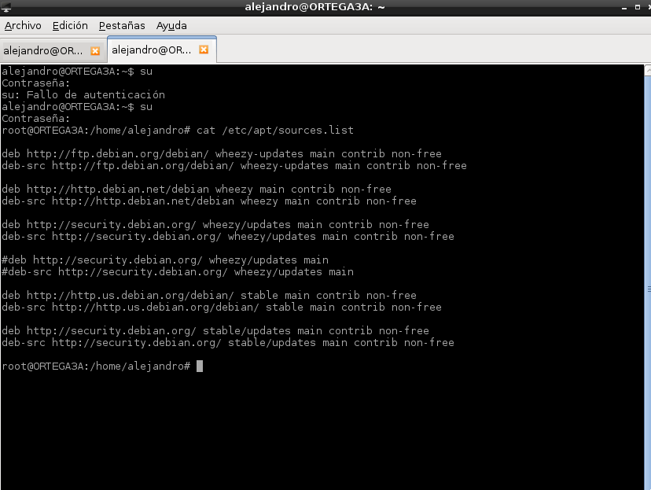
- Finalmente, modificamos correctamente los repositorios y ya podemos obtener las fuentes de debian-installer. Las fuentes las movemos a una carpeta que creamos que se llama "proy".
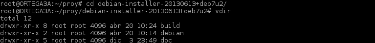
- Para poder usar debian-installer sin conflictos, utilizamos el comando "dpkg-checkbuilddeps" en el directorio raíz de debian-installer.
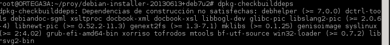
- Al insertar ese comando, nos pedia instalar una serie de paquetes, por lo que procedemos a instalarlos para continuar con la práctica.
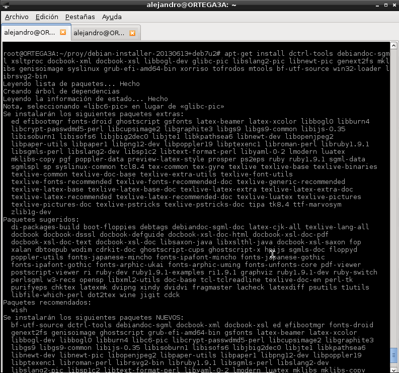
- Debido a que esta serie de paquetes ocupaba más de 1gb en el disco no teniamos el espacio requerido por lo que procedimos a crear una nueva máquina. Aprovechamos que ya estaban todos los paquetedes descargados, para utilizar el ssh y "pasarlos" a la nueva máquina y así no estar descargandolos nuevamente.
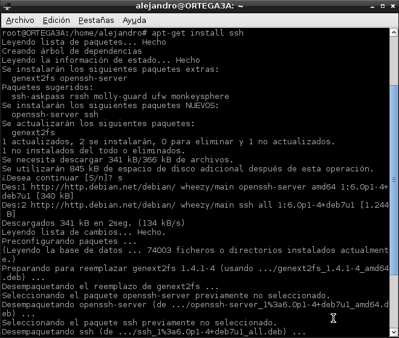
- Primero, comprimimos todos los paquetes del /apt/archives en .zip.
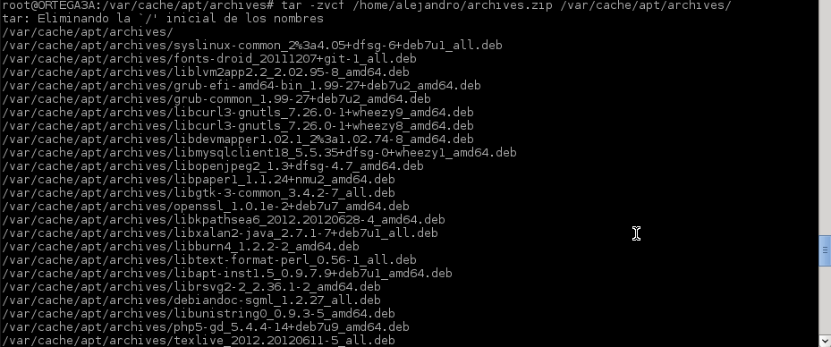
- Segundo, iniciamos el ssh y le "enviamos" los paquetes de forma comprimida a la nueva máquina.
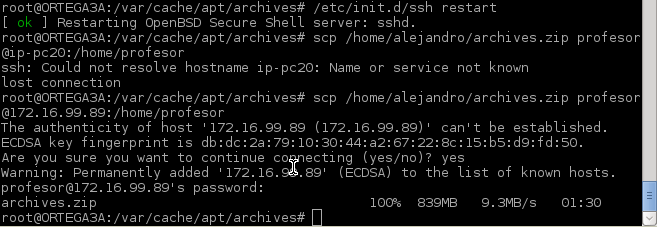
- Seguidamente descomprimimos los paquetes en /apt/archives/ de la nueva máquina y procedemos a instalarlos.
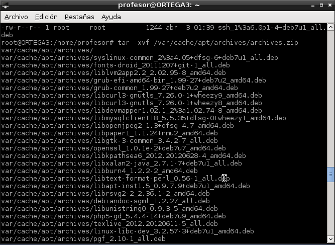
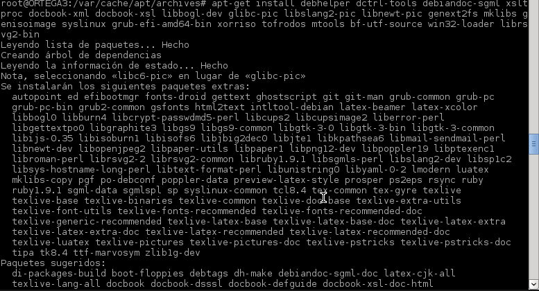
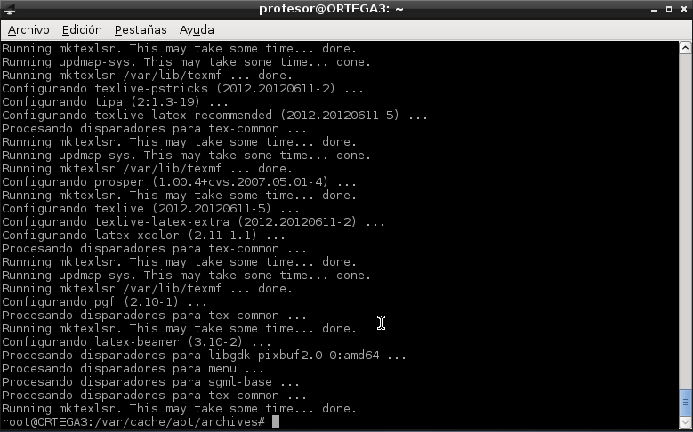
- Lo que resta ahora es completar el paquete debian-installer con los udebs requeridos para cada imagen. Simplemente hay que poner el comando "dpkg-buildpackage" en el directorio raiz del instalador.
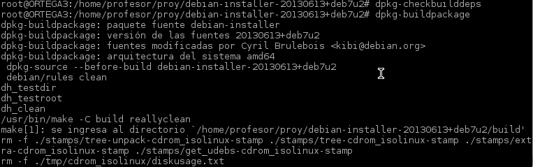
- Es posible adaptar la parte "externa" del instalador a nuestro gusto. Es decir, se pueden modificar las imágenes, colores, textos de ayuda, etc. Estos archivos están ubicados en build/boot/x86/. Por lo que procedemos a editar este archivo.
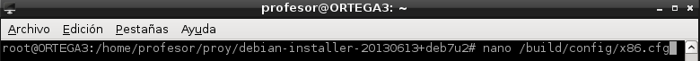
- Creímos oportuno editar el fondo de pantalla que se encuentra en el instalador modificando la siguiente línea:
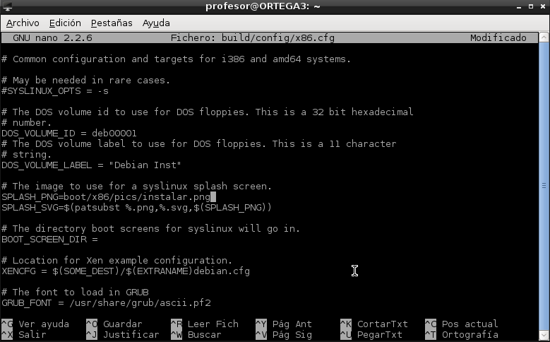
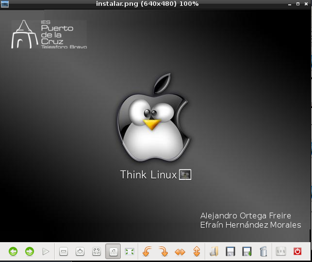
- Una vez instaladas las dependencias y elegidos los repositorios deseados, lo que queda es generar la imagen. Para ello se debe tener en cuenta la arquitectura y el tipo. Para obtener una lista de todas las posibles combinaciones de arquitecturas y tipos, basta con utilizar el comando "make".
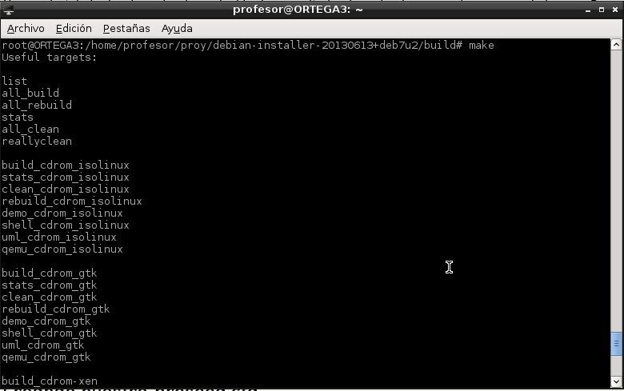
- Aunque por otro lado, si lo que se desea es que la imagen solo tenga el instalador, se puede crear una imagen mini-ISO con solo el netboot initrd en ella. Por ejemplo, el comando "make build_netboot" creará una imagen en build/dest/netboot/mini.iso, usando isolinux.
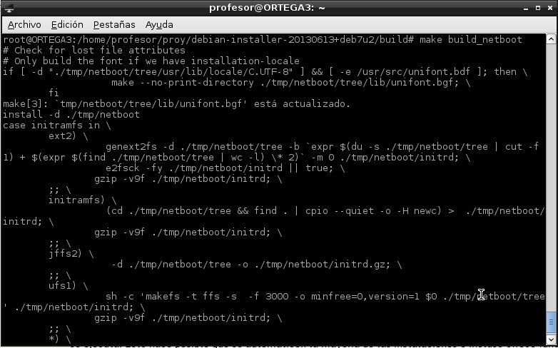
- A pesar de que se puede generar un archivo preseed.cfg utilizando algunos comandos, es preferible crear uno desde el principio. De esta manera, la automatización de la instalación será totalmente personalizable. Empezaremos creando un archivo y llamándolo preseed.cfg.
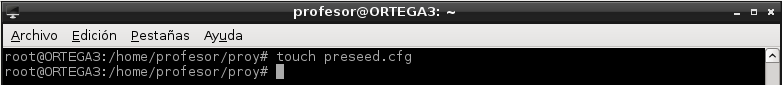
- A continuación se añadieron cada uno de los parámetros que se pueden configurar como la localización, mapa del teclado, configuración de la red, Configuración de los repositorios, Configuración de reloj y zona horaria y Cargador de arranque.
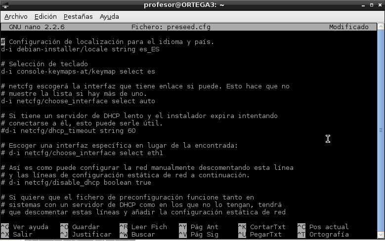
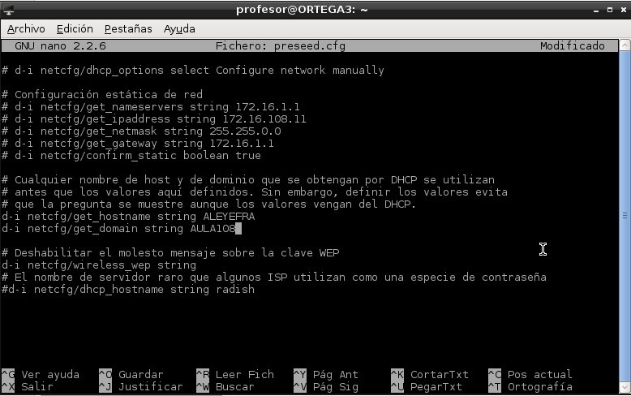
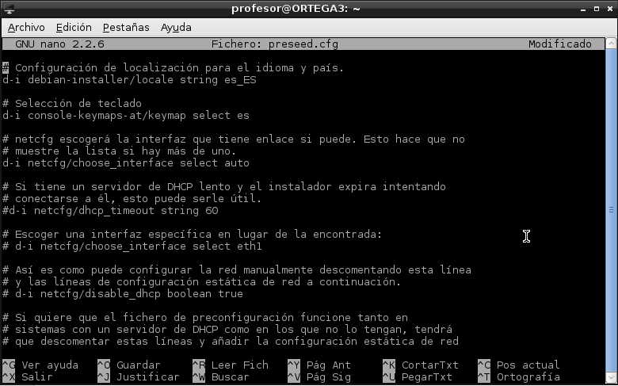
- Tendremos que editar el archivo de configuración ubicado en installer/build/config/common. En el ubicaremos la variable PRESEED y le especificaremos el directorio donde se encuentra nuestro archivo preseed.cfg.
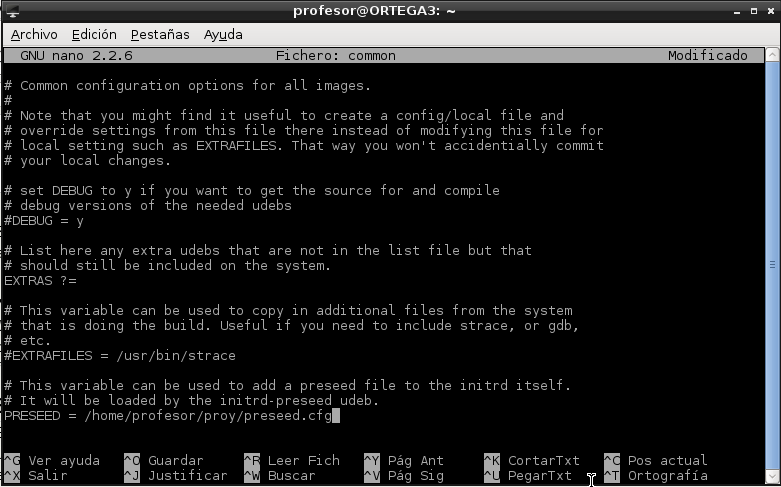
- Este mètodo es un poco mas complicado que el anterior. Dado que las imágenes ISO no se pueden modificar (directamente) una vez creadas, precisamos montarla en un directorio, y luego copiar su contenido a otro. Entonces, como root, ingresamos en la consola: .
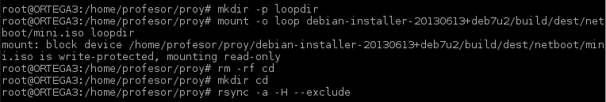
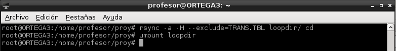
- El paso siguiente es modificar el initrd. Para ello, ingresaremos la siguiente secuencia de comandos:
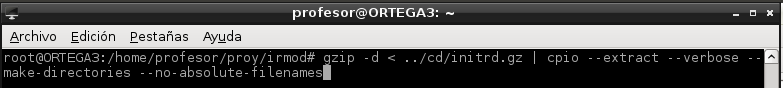
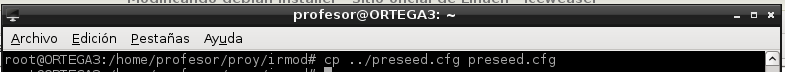
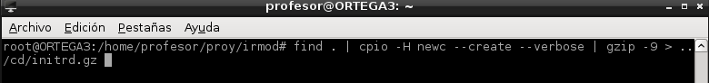
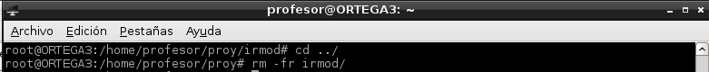
- Luego, para que el directorio cd/ quede listo para convertirse en una imagen ISO, tendremos que actualizar el md5sum.txt
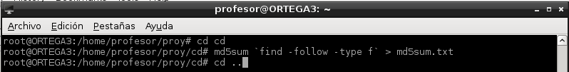
- Lo que resta ahora es generar la imagen ISO, y que esta sea booteable.
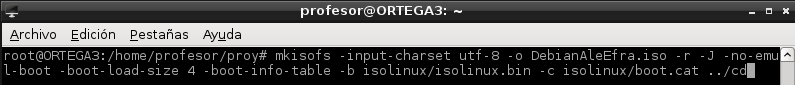
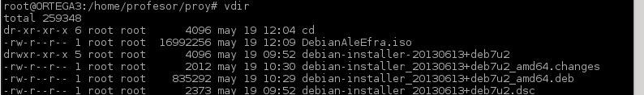
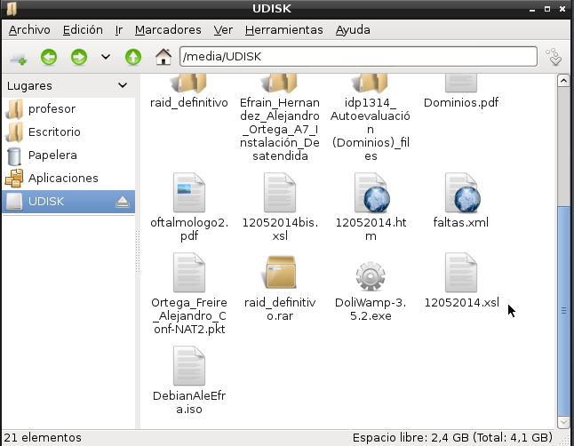
- Y definitivamente probamos la instalación de este debian "editado" por nosotros.
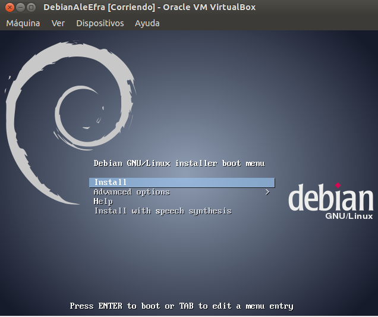
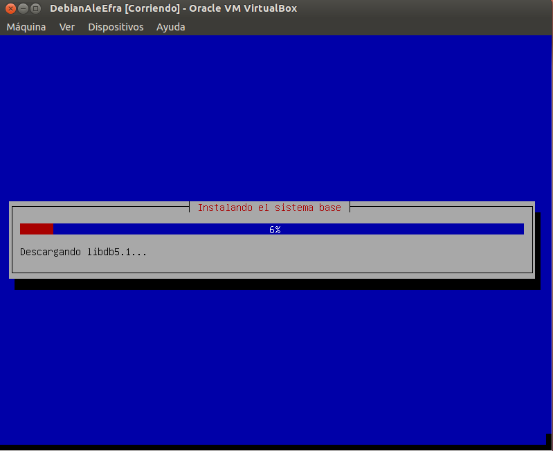
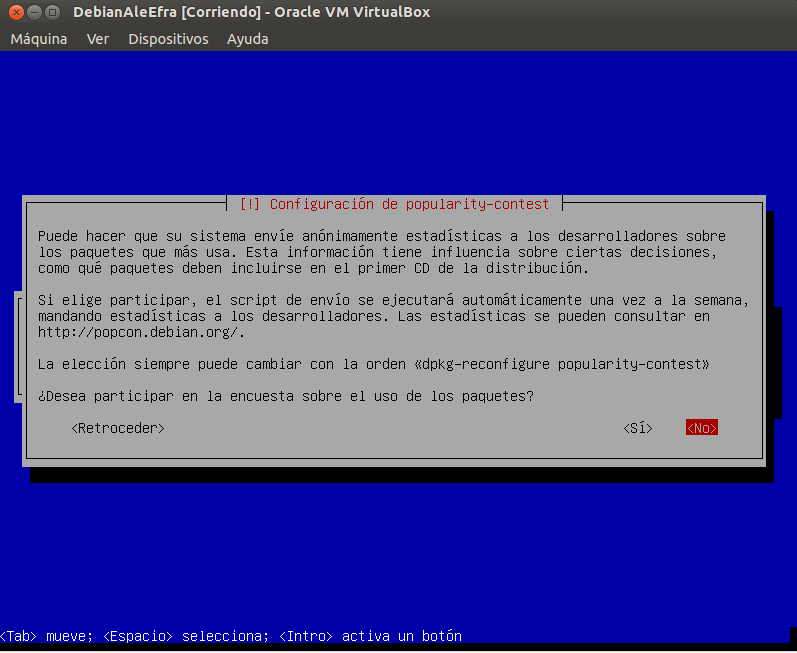
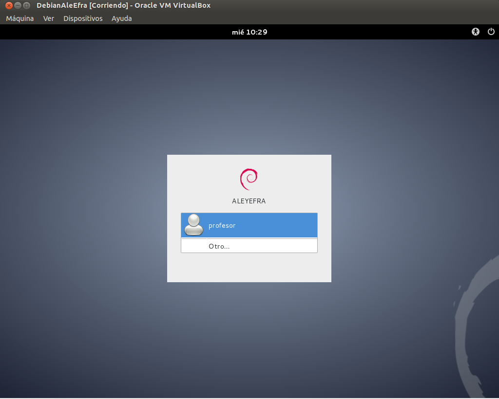